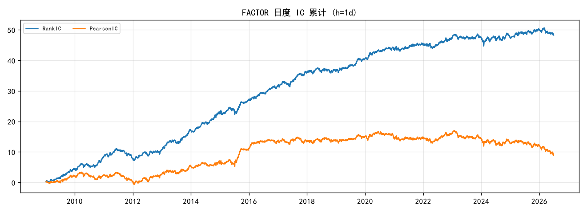
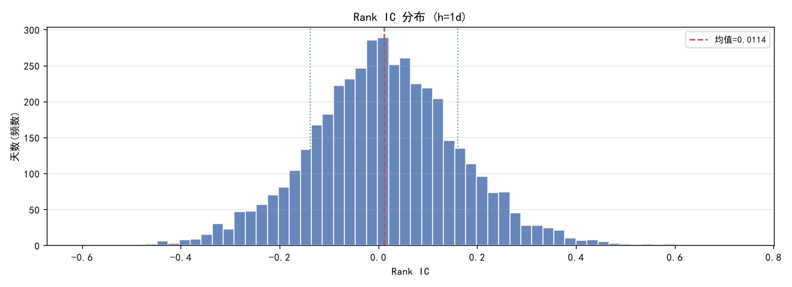
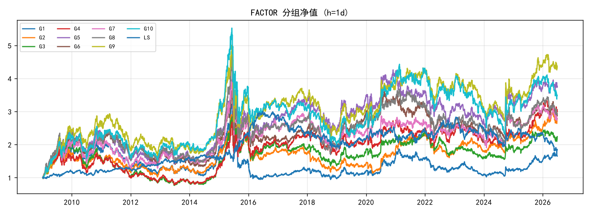
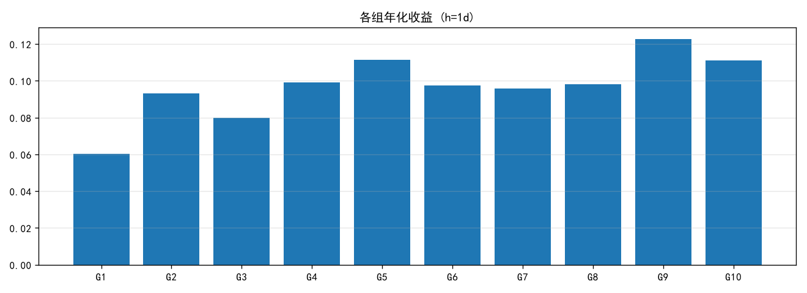
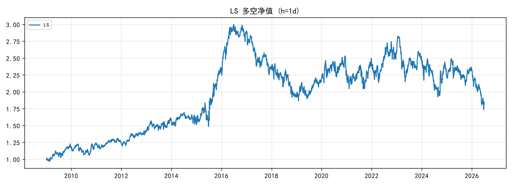
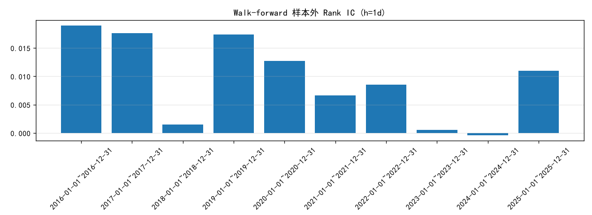
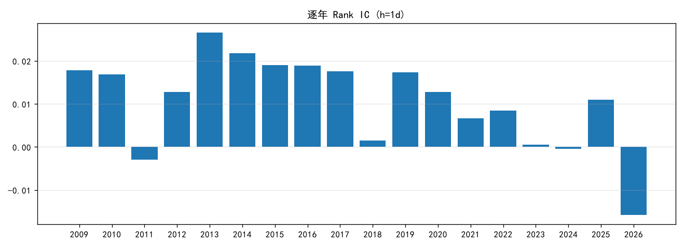
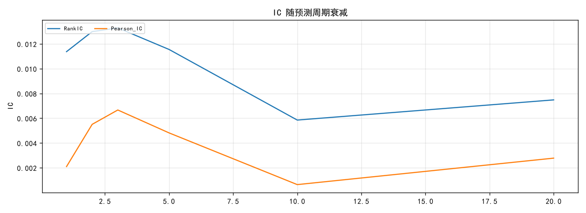
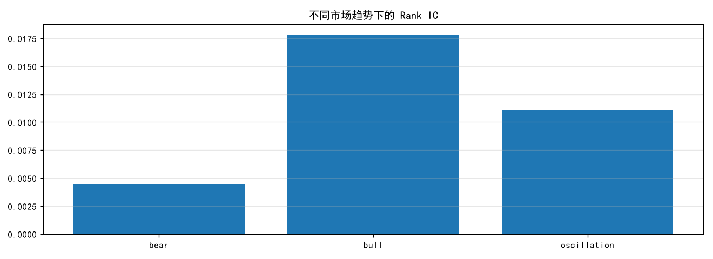

Step 0 · 数据加载
选定 Alpha158 中中间一个因子作为研究对象，加载其因子值、未来 1 日收益、基准收益及控制变量（Size/Beta/Mom/Vol/Liq/MKT），主分析区间切片保存以便复核。
IdxMin($low, 10)/10,datetime,instrument,FACTOR 0,2010-01-04,SH600000,0.3 1,2010-01-05,SH600000,0.2
,datetime,instrument,fwd1 0,2010-01-04,SH600000,0.0075776577 1,2010-01-05,SH600000,-0.019650698
,datetime,instrument,SIZE,BETA,MOM,VOL,LIQ 0,2010-01-04,SH600000,16.456419,-0.00438952,0.094842315,0.0403514,1.1154513 1,2010-01-05,SH600000,17.01761,-0.003195763,0.078238726,0.035860613,0.6393575
Step 1 · 第一层：IC
最基础的关系检验：每天横截面计算 Rank IC（因子与未来收益排名相关）与 Pearson IC，并统计 ICIR（信息比率）、IC t 值（统计显著性）与 IC>0 比例（胜率）。
| RankIC | RankIC_std | ICIR | IC_t | P_IC_gt_0 | Pearson_IC | N_days |
|---|---|---|---|---|---|---|
| 0.011374822226664284 | 0.14994068025043097 | 0.07586214900229912 | 4.943279150037444 | 0.5270843146490815 | 0.00209829010497474 | 4246 |


Step 2 · 第二层：分组收益
将股票按因子值从低到高分成 Q1~Q10，计算各组未来收益。直接观察“因子值越高，未来收益是否越高”。并计算 单调性 Corr(组序号, 组收益)。
| ann_return |
|---|
| 0.06018228334445706 |
| 0.09319491120672606 |
| 0.07989886104023672 |
| 0.09907370772637834 |
| 0.11154323943738402 |
| 0.09739123110565376 |
| 0.09571533643159254 |
| 0.09814297122650599 |
| 0.12279477191329702 |
| 0.1110046835840504 |
| 0.05082240023959333 |


Step 3 · 第三层：多空组合
把统计关系变成投资组合：Long(Q10) − Short(Q1)。观察年化收益、Sharpe、最大回撤等绩效，这是最接近“真实 Alpha”的一步。
| horizon | qlib_annualized_return | qlib_max_drawdown | ann_return | ann_vol | sharpe | max_drawdown | information_ratio |
|---|---|---|---|---|---|---|---|
| 1 | 0.04799893355961592 | -0.4494114492940753 | 0.03720488895410101 | 0.1691913533233892 | 0.3003841463603187 | -0.4208520155276375 | -0.12075633531389841 |

Step 4 · 第四层：中性化
检验因子是否只是“暴露了常见风险因子”（如市值、Beta、动量等）。对因子做中性化后再算 IC：若中性化后 IC 仍显著，说明因子有独立性。
| neutralization | RankIC |
|---|---|
| raw | 0.011374822226664284 |
| size | 0.010254298064276034 |
| size+beta+mom+vol+liq+mkt | 0.0053618795629618785 |
| industry |
Step 5 · 第五层：样本外 OOS
判断 Alpha 真假的核心。将区间切分为 Train(IS)/Valid/Test(OOS) 三段；并做 Walk-forward（前 6 年训练 → 后 1 年测试），看样本外 IC 是否稳定存在。
| split | start | end | N_days | RankIC | PearsonIC | ICIR | IC_t | P_IC_gt_0 |
|---|---|---|---|---|---|---|---|---|
| Train(IS) | 2010-01-01 | 2018-12-31 | 2187 | 0.014662533380094914 | 0.005265608909479014 | 0.10325206061682903 | 4.828621004312294 | 0.5326931870141747 |
| Valid | 2019-01-01 | 2021-12-31 | 730 | 0.012260758050566046 | 0.0014583078223372858 | 0.08583258991620864 | 2.319068875423615 | 0.5328767123287671 |
| Test(OOS) | 2022-01-01 | 2026-06-30 | 1085 | 0.002711562119214275 | -0.005329149076472942 | 0.015533022953674888 | 0.5116474960909505 | 0.5152073732718894 |
| train | test | N_days | RankIC | ICIR | IC_t |
|---|---|---|---|---|---|
| 2010-01-01~2015-12-31 | 2016-01-01~2016-12-31 | 244 | 0.01892097871676248 | 0.15052680472815624 | 2.3513038556866928 |
| 2011-01-01~2016-12-31 | 2017-01-01~2017-12-31 | 244 | 0.01762145351962361 | 0.11197487040741963 | 1.7491033906184776 |
| 2012-01-01~2017-12-31 | 2018-01-01~2018-12-31 | 243 | 0.0014862430287727586 | 0.00993833135448305 | 0.15492325363577517 |
| 2013-01-01~2018-12-31 | 2019-01-01~2019-12-31 | 244 | 0.01738433911009624 | 0.1380578628582123 | 2.156532757289436 |
| 2014-01-01~2019-12-31 | 2020-01-01~2020-12-31 | 243 | 0.01274696842589333 | 0.09028037239933161 | 1.4073317272969315 |
| 2015-01-01~2020-12-31 | 2021-01-01~2021-12-31 | 243 | 0.006629881919990339 | 0.041476093723229274 | 0.6465483146530954 |
| 2016-01-01~2021-12-31 | 2022-01-01~2022-12-31 | 242 | 0.008491205820263473 | 0.051622878426873575 | 0.8030635228002427 |
| 2017-01-01~2022-12-31 | 2023-01-01~2023-12-31 | 242 | 0.0005647040051759433 | 0.003666199586983203 | 0.05703268096106114 |
| 2018-01-01~2023-12-31 | 2024-01-01~2024-12-31 | 242 | -0.00037203280960576134 | -0.0018317600023695668 | -0.028495498221999756 |
| 2019-01-01~2024-12-31 | 2025-01-01~2025-12-31 | 243 | 0.010999561681742043 | 0.06465560440986982 | 1.00788112648772 |

Step 6 · 第六层：稳定性（逐年 IC）
真正的 Alpha 应在不同年份稳定为正。逐年统计 Rank IC、ICIR、IC>0 比例。
| year | N_days | RankIC | PearsonIC | ICIR | IC_t | P_IC_gt_0 |
|---|---|---|---|---|---|---|
| 2009 | 244 | 0.01777924752413227 | 0.008651701386717482 | 0.15188478869567498 | 2.3725162433710922 | 0.5122950819672131 |
| 2010 | 242 | 0.01689067861777109 | 0.0005651192731321501 | 0.12059002843708529 | 1.8759405907295152 | 0.5206611570247934 |
| 2011 | 244 | -0.0029266232756905313 | -0.008578408731245175 | -0.023230126927016915 | -0.3628661826060086 | 0.4713114754098361 |
| 2012 | 243 | 0.012754835017835047 | 0.010935433555262138 | 0.0954329784818346 | 1.487652907033484 | 0.522633744855967 |
| 2013 | 238 | 0.02661662199239773 | 0.010949273695655197 | 0.1976589791275693 | 3.049334213083437 | 0.5588235294117647 |
| 2014 | 245 | 0.021765288656526705 | 0.002745458456153034 | 0.1696179390509686 | 2.654940693449674 | 0.6 |
| 2015 | 244 | 0.01905461135242564 | 0.020174465849321758 | 0.10909539789624052 | 1.7041245921240402 | 0.5614754098360656 |
| 2016 | 244 | 0.01892097871676248 | 0.01092812476301898 | 0.15052680472815624 | 2.3513038556866928 | 0.5368852459016393 |
| 2017 | 244 | 0.01762145351962361 | -0.0007551761903138248 | 0.11197487040741963 | 1.7491033906184776 | 0.5532786885245902 |
| 2018 | 243 | 0.0014862430287727586 | 0.0005416280540318784 | 0.00993833135448305 | 0.15492325363577517 | 0.4691358024691358 |
| 2019 | 244 | 0.01738433911009624 | 0.005890517697798491 | 0.1380578628582123 | 2.156532757289436 | 0.5368852459016393 |
| 2020 | 243 | 0.01274696842589333 | -0.002123376070170931 | 0.09028037239933161 | 1.4073317272969315 | 0.551440329218107 |
| 2021 | 243 | 0.006629881919990339 | 0.0005895422925717022 | 0.041476093723229274 | 0.6465483146530954 | 0.5102880658436214 |
| 2022 | 242 | 0.008491205820263473 | 0.005536187810938419 | 0.051622878426873575 | 0.8030635228002427 | 0.5289256198347108 |
| 2023 | 242 | 0.0005647040051759433 | -0.006559472774845858 | 0.003666199586983203 | 0.05703268096106114 | 0.5413223140495868 |
| 2024 | 242 | -0.00037203280960576134 | -0.0064032206215575175 | -0.0018317600023695668 | -0.028495498221999756 | 0.5 |
| 2025 | 243 | 0.010999561681742043 | -0.002789902438218047 | 0.06465560440986982 | 1.00788112648772 | 0.5020576131687243 |
| 2026 | 116 | -0.01579609333747908 | -0.02850832848106584 | -0.08710183258957499 | -0.9381154469966008 | 0.49137931034482757 |

Step 7 · IC 衰减分析
因子对未来 1/2/3/5/10/20 日的预测力衰减情况，决定调仓频率与策略容量。
| horizon | RankIC | Pearson_IC | ICIR | IC_t | P_IC_gt_0 | N_days |
|---|---|---|---|---|---|---|
| 1 | 0.011374822226664284 | 0.00209829010497474 | 0.07586214900229912 | 4.943279150037444 | 0.5270843146490815 | 4246 |
| 2 | 0.012992916239237751 | 0.005506955194936495 | 0.08841571812600497 | 5.760608036815582 | 0.5352179034157832 | 4245 |
| 3 | 0.013293761593488813 | 0.006665821696031554 | 0.09062777757796192 | 5.904036282717947 | 0.5374646559849199 | 4244 |
| 5 | 0.011551803573986568 | 0.004815885464568438 | 0.07902872797275404 | 5.147191469379606 | 0.5332390381895332 | 4242 |
| 10 | 0.005852459273144035 | 0.0006420515114563659 | 0.04049867727005581 | 2.636149711314678 | 0.5133349067736606 | 4237 |
| 20 | 0.007481028132945154 | 0.0027782016128167068 | 0.053520091372692244 | 3.479629227827038 | 0.5031937544357701 | 4227 |

Step 8 · IC 的条件依赖（市场环境）
把市场按趋势（牛/熊/震荡）、波动（高/低）、成交额（高/低）分样本，分别计算 IC，找出“Alpha 在什么市场环境下有效”。
| regime_type | state | N_days | RankIC | PearsonIC | ICIR |
|---|---|---|---|---|---|
| trend(bull/bear/osc) | bear | 775 | 0.004451351485909198 | 0.007909067027949471 | 0.02842709557680548 |
| trend(bull/bear/osc) | bull | 945 | 0.017848089324457146 | 0.00038518130406251617 | 0.12243742504989927 |
| trend(bull/bear/osc) | oscillation | 2526 | 0.011077297450999573 | 0.0009563802481088008 | 0.07416967215116432 |
| vol(high/low) | high_vol | 2114 | 0.012241691324286468 | 0.004811515701611377 | 0.08106446388249633 |
| vol(high/low) | low_vol | 2132 | 0.010515271911292194 | -0.0005920283337165592 | 0.07061901029893115 |
| amount(high/low) | high_vol | 2114 | 0.010429129741944473 | 0.002207902711186594 | 0.06386757082473432 |
| amount(high/low) | low_vol | 2132 | 0.012312530440875205 | 0.001989602933524524 | 0.09090784616976759 |

Step 9 · 交易成本
从“因子有效”到“策略有效”的关键：净收益 = 毛收益 − 换手率 × 成本。统计平均换手率，并在多档双边成本下计算净年化、净 Sharpe、净回撤。
| cost_roundtrip | turnover_avg | gross_ann_return | net_ann_return | net_sharpe | net_max_drawdown |
|---|---|---|---|---|---|
| 0.001 | 0.442146984496097 | 0.03720488895410101 | -0.07207424377003457 | -0.357027946732983 | -0.8079137913414596 |
| 0.003 | 0.442146984496097 | 0.03720488895410101 | -0.2574288941973816 | -1.666748653845487 | -0.9938222224474085 |
| 0.005 | 0.442146984496097 | 0.03720488895410101 | -0.4058912074388913 | -2.9668453324695143 | -0.9998550105727044 |
| 0.01 | 0.442146984496097 | 0.03720488895410101 | -0.6601708972889551 | -6.1540424101189535 | -0.9999999879650864 |
Step 10 · Alpha Scorecard
综合所有维度形成一张评分卡，并给出因子等级（A/B/C/D）。这是整套研究的核心结论。
| 指标 | 评价 | 类别 |
|---|---|---|
| Rank IC | 0.0114 | 核心 |
| Pearson IC | 0.0021 | 辅助 |
| ICIR | 0.076 | 核心 |
| IC t-value | 4.94 | 核心 |
| IC > 0 比例 | 0.527 | 核心 |
| Q1->Q10 单调性 | 0.769 | 核心 |
| Q10-Q1 收益(年化) | 0.0372 | 核心 |
| OOS RankIC | 0.0027 | **最重要** |
| OOS ICIR | 0.016 | **最重要** |
| IC 衰减(h=1->20) | 0.0114->0.0075 | 核心 |
| 不同市场状态 IC(均值) | 0.0111 | 稳定性 |
| 行业中性后 IC | N/A(无标签) | 独立性 |
| Size 中性后 IC | 0.0103 | 独立性 |
| 全控制中性后 IC | 0.0054 | 独立性 |
| Winsorize 后 IC | 同上(原始已去极值) | 鲁棒性 |
| 平均换手率 | 0.4421 | 交易性 |
| 成本后净年化(0.3%) | -0.2574 | **最终** |